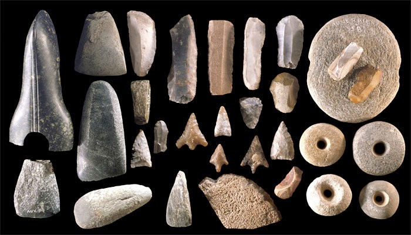
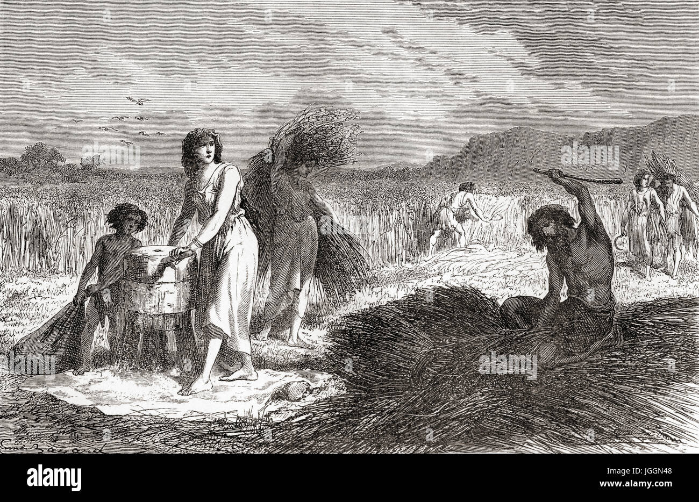
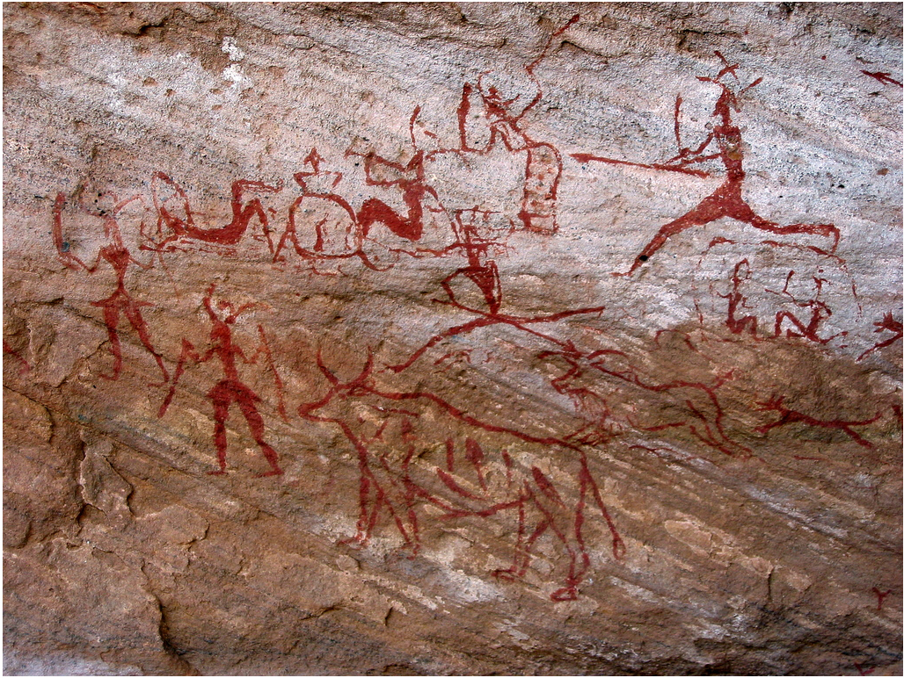

Los primeros pasos de la tecnologia

La tecnología nació de la necesidad humana de adaptarse y sobrevivir. Hace millones de años, nuestros ancestros comenzaron a tallar herramientas de piedra para cazar y procesar alimentos. Con el tiempo, inventaron la agricultura, la rueda y la escritura. Estos primeros avances sentaron las bases para el desarrollo tecnológico continuo que ha transformado el mundo en el que vivimos hoy.
Primeros indicios de avances tecnologicos
- Herramientas de Piedra
- Agricultura
- Rueda
- Escritura
Uno de los primeros y más significativos avances tecnológicos fue la creación de herramientas de piedra por parte de nuestros antepasados, hace más de 3 millones de años. Estas herramientas fueron utilizadas para cortar, raspar y perforar, facilitando actividades como la caza, la preparación de alimentos y la fabricación de otros utensilios.
El desarrollo de la agricultura, que comenzó hace aproximadamente 10,000 años, marcó un hito importante en la historia de la humanidad. La domesticación de plantas y animales permitió a las comunidades humanas establecerse de manera sedentaria, dando lugar a la formación de las primeras aldeas y civilizaciones.
La invención de la rueda, que se estima que ocurrió alrededor del 3500 a.C., revolucionó el transporte y la logística. La rueda permitió a las personas transportar cargas más pesadas y viajar distancias más largas con mayor facilidad, lo que facilitó el comercio y la comunicación entre diferentes culturas.
El desarrollo de sistemas de escritura, como los jeroglíficos en Egipto y la escritura cuneiforme en Mesopotamia, fue un avance tecnológico crucial que permitió a las sociedades humanas registrar información, preservar la historia y transmitir conocimientos de generación en generación.
